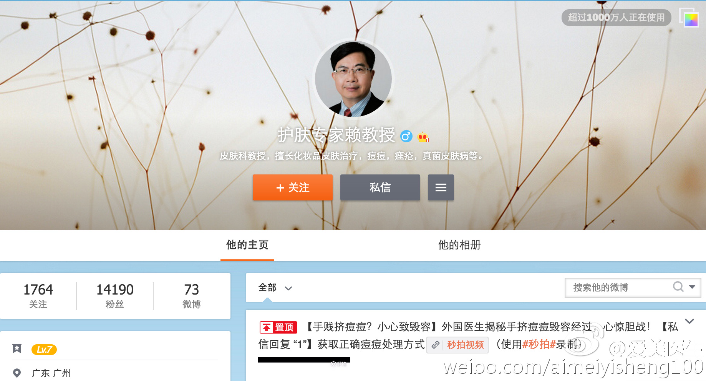

百度外卖的送餐员-百度骑士，常来给我们送午餐的，是本科毕业呢。

Ada李力
2015-10-30
Ada李力
2015-10-30
昨晚听一位开民营医美医院的老板说，现在的行业方向有了变化，以前是做好营销就行，现在都在从医生资源入手。- 在我看来，这确实是个好的趋势。
Ada李力
2015-10-30
被不靠谱美容院什么的忽悠就当被收了智商税吧，但这假冒专家的，还真是不好辨别乐。@来去之间 @TimYang //@爱美医生: 大师名单可以参考 @皮肤美容李远宏教授 的博客中名单列表“李远宏和她的小伙伴们推荐的医美专家 ”  李远宏和她的小伙伴们推荐的医美专家
李远宏和她的小伙伴们推荐的医美专家
@爱美医生Dri:
医美大师们通常都开了微博，也有教授没开，赖维教授没开微博。目前微博上有人假冒赖维教授的名字和头像开了微博，竟然也有一万多的粉丝。赖伟教授本人也是听到患者反映才知道这回事情，也许向新浪微博申诉了，对方改了微博昵称，但没改头像。大家小心骗子！！！
- 